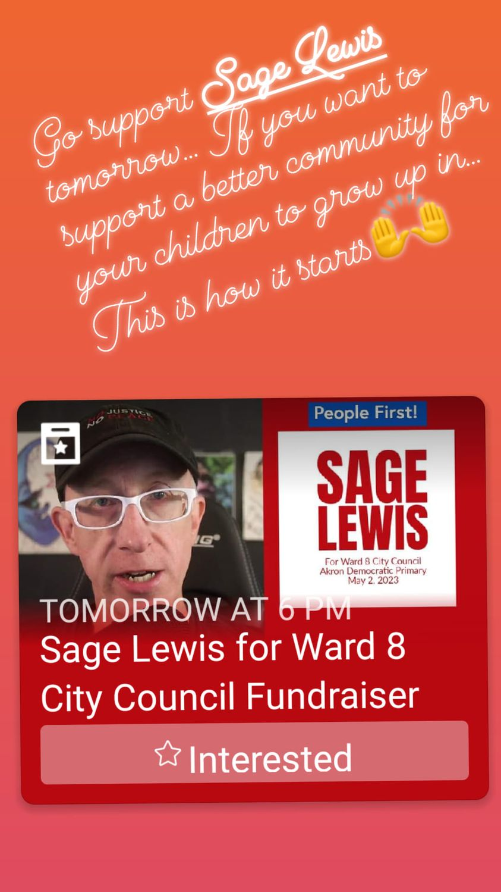

Timeline photos
I had the most inspiring conversation with @[100067164891350:2048:Jennifer Syphers] and her friend Julia yesterday.
Jennifer has what is known as "Lived Experience." She has got to be one of the most enlightened, thoughtful people on addiction and homelessness that I have ever met.
Thank you for this lovely message, Jennifer. (this was on her Story).
I would love ANYONE to stop by tonight (Thursday, January 26, 2023) from 6-8pm at my COMMUNITYRAISER at @[100063454609669:2048:Mercedes' Tavern] to help me with my campaign for Akron City Council Ward 8.
Money is not important. Coming together is what is important. They have a super cool pool table and jukebox.
I hope you can make it.